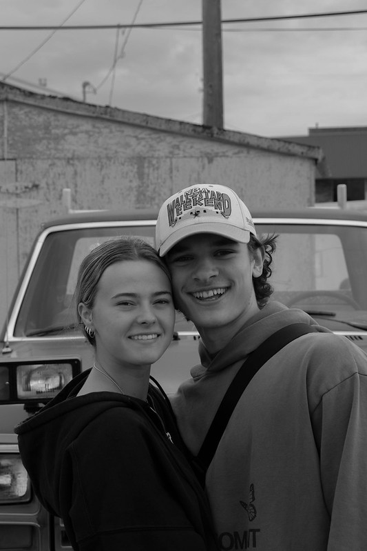
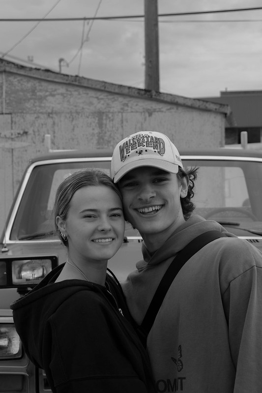

Views Like These
Photography isnt just capturing portraiats or family photos.
It has allowed me as a creator to travel and see different parts of the world
I love being able to go into nature and capture the wildlife and plants.
The location thats chosen has a lot to do with the outcome of the photos

 
